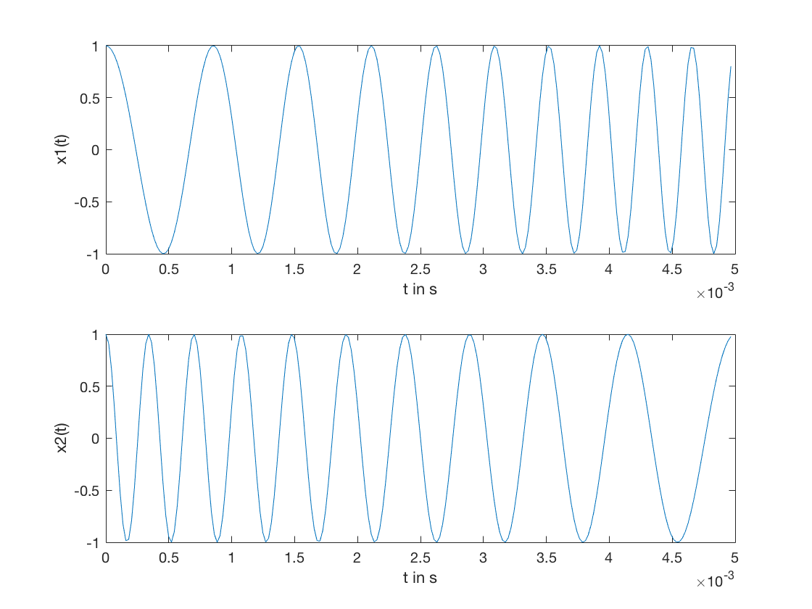
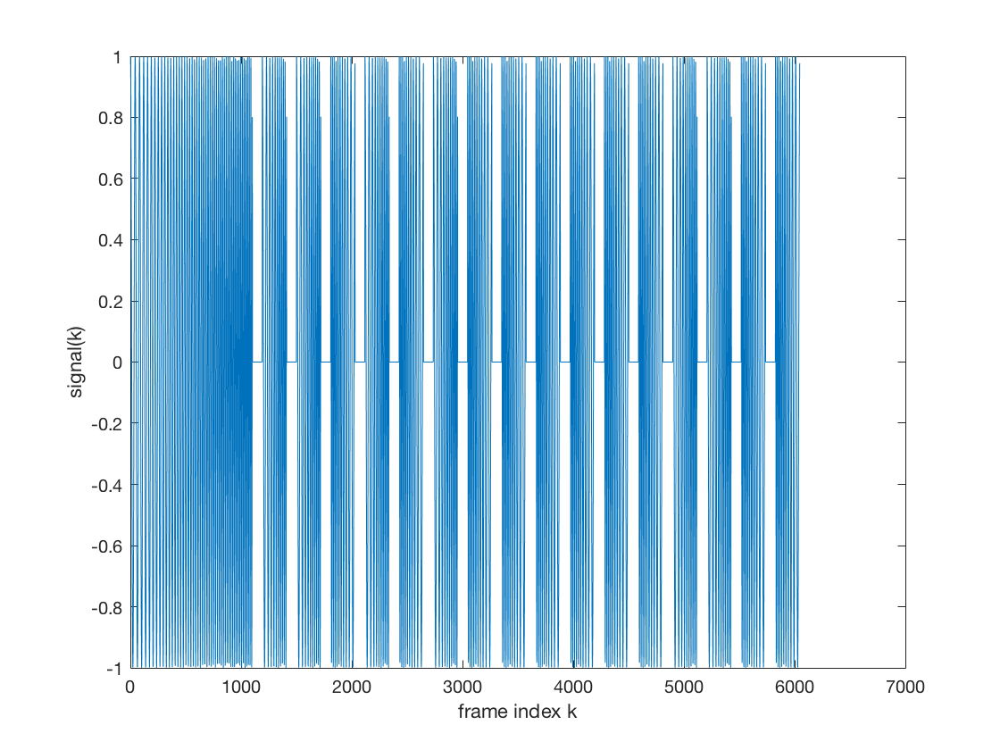
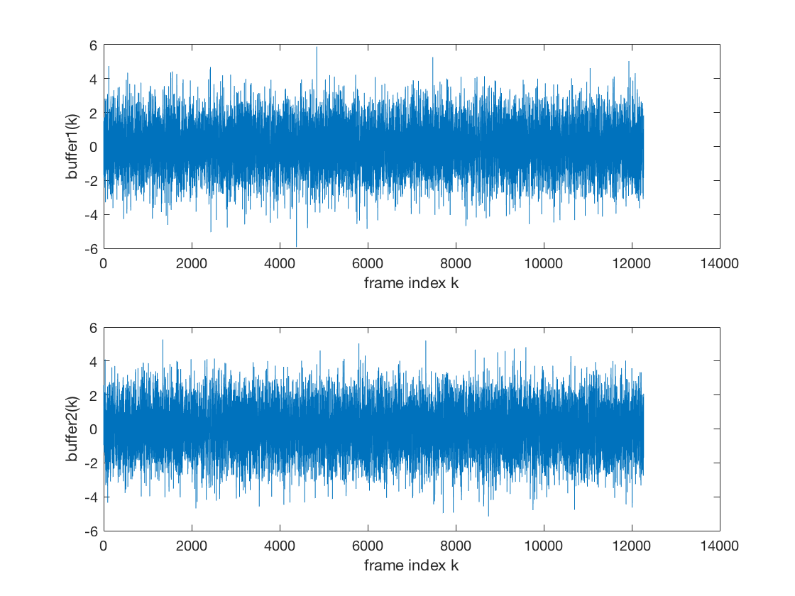
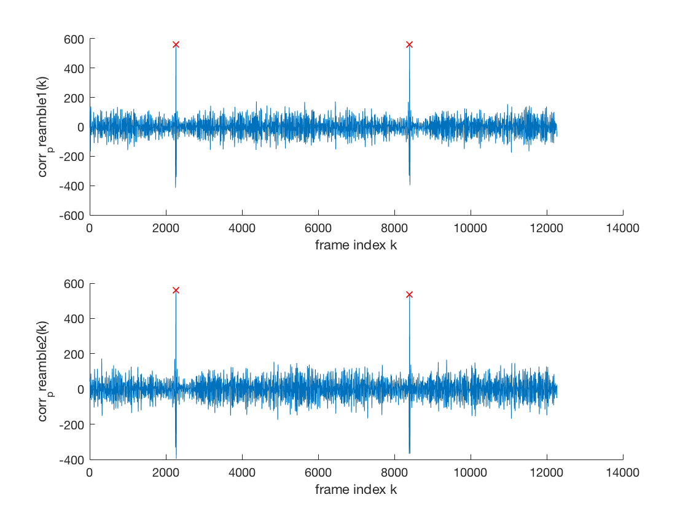
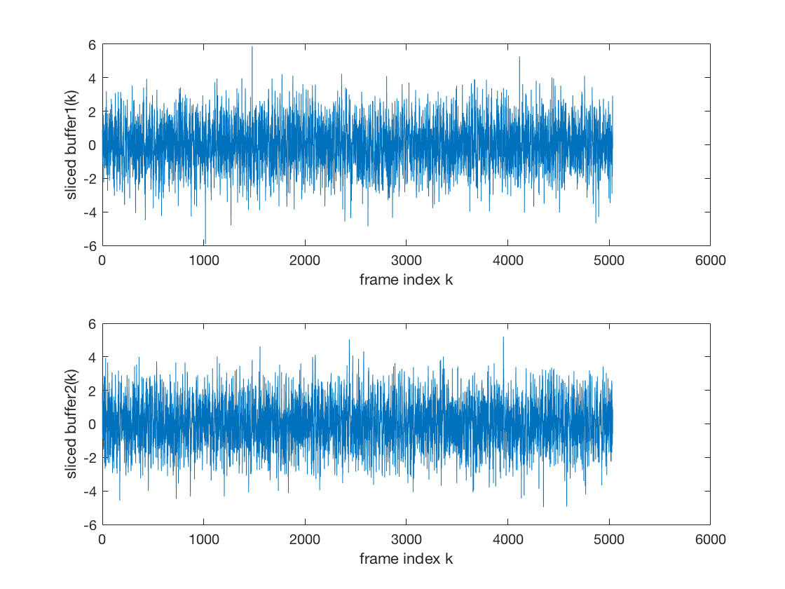

Contents
Preparations
clean up
clear all; close all; % set up constants fs = 44100; %Hz f1 = 1000; %Hz f2 = 3000; %Hz T = 0.005; %s % set up symbols x1 = chirp(f1, f2, fs, T); [x2, t] = chirp(f2, f1, fs, T); size_symbol = size(x1, 2); % set up preamble, this is an up chirp with five times the % duration of the symbol. preamble = chirp(f1, f2, fs, 5 * T); % prepare guard interval T_guard = 0.002; guard = zeros(1, ceil(T_guard * fs)); size_guard = size(guard, 2); % plot symbols figure(); set(gcf,'numbertitle','off','name','Chirp Symbols in Time Domain'); subplot(2, 1, 1); plot(t, x1); xlabel('t in s'), ylabel('x1(t)'); subplot(2, 1, 2); plot(t, x2); xlabel('t in s'), ylabel('x2(t)');
Construct a package
A package has a constant number of bits. Each bit is mapped onto a symbol and guarded with a guard interval. At the beginning of each package, the preamble is included once.
bitsPerPackage = 16; bits = [1 1 0 1 0 1 0 0 0 0 0 0 1 1 0 0]; signal = [preamble]; for b = bits if b == 1 signal = [signal guard x1]; else signal = [signal guard x2]; end end figure(); set(gcf,'numbertitle','off','name','Time Domain Representation of a Package'); plot(signal); xlabel('frame index k'), ylabel('signal(k)'); % transmit multiple packages tx = [signal guard signal guard signal guard signal]; % with noise tx = awgn(tx, -2);
Receiver
% listen for an time interval, long enough to record two full preambles. size_signal = size([signal guard], 2); record_duration = 2 * size_signal; % recording will start with a random offset offset = ceil(rand() * size_signal); % two buffers will be needed, to identify subsequent packages buffer1 = tx(1, offset:(offset + record_duration)); % the second buffer is set one signal size after the first. In live % transmission both buffers will be exchanged after recording one % record_duration. buffer2 = tx(1, (offset + size_signal):(offset + size_signal + record_duration)); figure(); set(gcf,'numbertitle','off','name','Recorded Buffers at Receiver'); subplot(2, 1, 1); plot(buffer1); xlabel('frame index k'), ylabel('buffer1(k)'); subplot(2, 1, 2); plot(buffer2); xlabel('frame index k'), ylabel('buffer2(k)');
Synchronization
find packages by correlation with the preamble.
corr_preamble1 = correlate(buffer1, preamble); corr_preamble2 = correlate(buffer2, preamble); thresh = 0.8; peaks1 = findAbsolutePeaks(corr_preamble1, 0.8); peaks2 = findAbsolutePeaks(corr_preamble2, 0.8); figure(); set(gcf,'numbertitle','off','name','Correlation of Preamble with Buffers'); subplot(2, 1, 1); hold on; plot(corr_preamble1); plot(peaks1, corr_preamble1(peaks1), 'xr'); xlabel('frame index k'), ylabel('corr_preamble1(k)'); hold off; subplot(2, 1, 2); hold on; plot(corr_preamble2); plot(peaks2, corr_preamble2(peaks2), 'xr'); xlabel('frame index k'), ylabel('corr_preamble2(k)'); hold off;
Slice buffers at peaks of correlation
It is assumed, that there will exist only two significant peaks. The buffer needs to be dropped, when more peaks have been detected. This will be the case, when the SNR is poor, i.e. either the noise level is too high or no actual transmission took place.
% plot sliced signal buffer1 = buffer1(1, (peaks1(1) + size(preamble, 2)):peaks1(2)); buffer2 = buffer2(1, (peaks2(1) + size(preamble, 2)):peaks2(2)); figure(); subplot(2, 1, 1); plot(buffer1); xlabel('frame index k'), ylabel('sliced buffer1(k)'); subplot(2, 1, 2); plot(buffer2); xlabel('frame index k'), ylabel('sliced buffer2(k)');
detect symbols in sliced buffers.
i = 1; step = size_symbol + size_guard; bits_rx = []; while i < (size(buffer1, 2) - step) window = buffer1(i:(i + step)); corr_x1 = correlate(window, x1); corr_x2 = correlate(window, x2); if max(abs(corr_x1)) > max(abs(corr_x2)) bits_rx = [bits_rx 1]; else bits_rx = [bits_rx 0]; end i = i + step; end
Compare results
bits_rx bits
bits_rx =
Columns 1 through 13
1 1 0 1 0 1 0 0 0 0 0 0 1
Columns 14 through 16
1 0 0
bits =
Columns 1 through 13
1 1 0 1 0 1 0 0 0 0 0 0 1
Columns 14 through 16
1 0 0